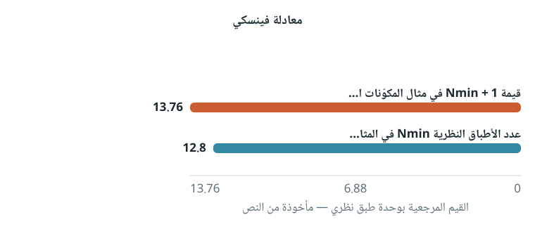

معادلة فينسكي
Fenske equation
معادلة تعطي أقل عدد أطباق نظرية لفصل ثنائي عند ارتجاع كلي، من تراكيب الناتج والقاع والمتطايرية النسبية بين المكوّنين المفتاحيين.
معادلة فينسكي معادلة اشتقّها ميريل فينسكي سنة 1932 لحساب أقل عدد من الأطباق النظرية اللازمة لفصل مخلوط ثنائي في برج يعمل عند الارتجاع الكلي، أي حين لا يُسحب ناتج علوي من البرج. صورتها الشائعة: Nmin = log[(xD/(1 − xD))·((1 − xB)/xB)] / log α، حيث xD الكسر المولي للمكوّن الأكثر تطايرًا في الناتج العلوي، وxB الكسر المولي نفسه في القاع، وα المتطايرية النسبية للمكوّن الأخف إلى الأثقل. وتُعدّ المُبخِّر في العدد Nmin طبقًا نظريًا واحدًا. وإذا تغيّرت المتطايرية بين أعلى البرج وأسفله استُخدم متوسط هندسي بين قيمتي الطرفين. وتُستخدم المعادلة أيضًا لتقدير توزيع المكوّنات غير المفتاحية بين الناتج والقاع، ولذلك تُعدّ الخطوة الأولى في الطرق المختصرة للتصميم. وهي حدّ أدنى رياضي: لا تعطي عددًا يُشغَّل عنده، بل مرجعًا يُقاس عليه، ولا تحدد نسبة ارتجاع ولا قطرًا ولا حملًا.
كيف تعمل الظاهرة؟
الآلية موازنة مادية متكرّرة على سلسلة أطباق عند الارتجاع الكلي. في هذه الحالة يتطابق خط التشغيل مع القطر y = x، فتصير كل درجة انتقالًا بين القطر ومنحنى الاتزان. وبافتراض متطايرية نسبية ثابتة α، يكون لكل طبق معامل فصل ثابت يساوي α، ويتضاعف أثر الأطباق ضربًا لا جمعًا. ولذلك يتحول عدد الأطباق إلى لوغاريتم نسبة التركيب الكلية مقسومًا على لوغاريتم α: كل طبق يضرب نسبة (الأخف/الأثقل) في α، وN طبق يضربها في α مرفوعة إلى N. وهذا سبب كون العلاقة لوغاريتمية لا خطية.
العلاقة بالأرقام
Nmin = log[(xD/(1 − xD))·((1 − xB)/xB)] / log α. في المثال المنشور: D·x(2,D) = 39.6 وB·x(2,B) = 0.40 وD·x(4,D) = 0.39 وB·x(4,B) = 38.61 وα = 1.95، فيكون Nmin + 1 = ln[(39.6/0.40)/(0.39/38.61)]/ln 1.95 = 13.76، أي Nmin ≈ 12.8. وإذا تغيّرت α بين أعلى البرج وأسفله استُخدم المتوسط الهندسي جذر(α_top · α_bottom). ولأن العلاقة لوغاريتمية، فإن مضاعفة نسبة الفصل لا تضاعف عدد الأطباق بل تزيدها بمقدار log 2 / log α.
مفاهيم متقاربة
التمييز الأول: Nmin هو أقل عدد أطباق، ويقابل أعلى ارتجاع (الارتجاع الكلي)؛ وRmin هو أقل ارتجاع، ويقابل عددًا لانهائيًا من الأطباق. الخلط بينهما يعكس المعنى. التمييز الثاني: المعادلة لا تعطي نسبة ارتجاع ولا تصلح لحساب عدد أطباق عند نسبة تشغيل محددة؛ تلك مهمة مكيب-ثيل أو ارتباط جيليلاند. التمييز الثالث: المتطايرية النسبية في المعادلة متوسط، لا قيمة موضعية؛ استعمال قيمة طرف واحد خطأ منهجي. التمييز الرابع: اصطلاح عدّ المُبخِّر يجب التصريح به، لأن N قد تشمله أو لا تشمله.
حدود التطبيق
المعادلة صحيحة عند الارتجاع الكلي، وهي حالة حدّية لا تُشغَّل اقتصاديًا لأنها تعني مكثِّفًا ومُبخِّرًا وقطرًا كبيرًا مقابل تدفق تغذية معطى. وتفترض متطايرية نسبية ثابتة، وهو تقريب يضعف عند تغيّر كبير في درجة الحرارة أو الضغط أو عند اقتراب النظام من الأزيوتروب. وهي ثنائية المكوّنين في صورتها الأساسية، وتحتاج تعديلًا للمخاليط المتعددة. ولا تعطي عددًا حقيقيًا: الناتج نظري ويحتاج كفاءة طبق للتحويل.

| الكمية | القيمة | المصدر |
|---|---|---|
| سنة اشتقاق معادلة فينسكي | 1932 سنة | [1] |
| قيمة Nmin + 1 في مثال المكوّنات الخمسة | 13.76 طبق نظري | [2] |
| عدد الأطباق النظرية Nmin في المثال نفسه | 12.8 طبق نظري | [2] |
| المتطايرية النسبية بين المفتاحين في المثال | 1.95 بلا بُعد | [2] |
المصادر
- 1 Fractionation of Straight-Run Pennsylvania Gasoline — Industrial & Engineering Chemistry (ACS) (1932). skoge.folk.ntnu.no/puublications_others/1932_Fenske-Fractionation-of-straight-run-pennsylvania-gasoline.pdf · اطُّلع عليه 2026-11-28
- 2 Lecture 11 Example Problems (D. Courtemanche) — University at Buffalo — CE407 Separations (2020). wwwcourses.sens.buffalo.edu/ce407/notes/ce407_notes_Lecture11ep.pdf · اطُّلع عليه 2026-11-28
- 3 Fenske equation — LUMITOS / bionity.com (نقلًا عن مقالة فينسكي) (2026). www.bionity.com/en/encyclopedia/Fenske_equation.html · اطُّلع عليه 2026-11-28
استشهد بهذا المصطلح
الصيغتان مبنيتان من بيانات الصفحة نفسها: العنوان والتاريخ ورابط النسخة المنشورة.
معادلة فينسكي — Fenske equation. (2026). ديوان المعرفة — انفراد. https://infiradev.com/diwan/terms/term-fenske-equation.html
@misc{term-fenske-equation2026,
title = {معادلة فينسكي},
titleaddon = {Fenske equation},
howpublished = {{ديوان المعرفة — انفراد} — مرجع علمي عربي},
year = {2026},
url = {https://infiradev.com/diwan/terms/term-fenske-equation.html},
urldate = {2026-11-28},
note = {مراجعة علمية: Abdullah Al-Huwaidi}
}
راجعه: Abdullah Al-Huwaidi · 2026-11-28 · آخر تحديث 2026-11-28